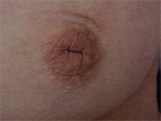

Nipple Discharge
INTRODUCTION
Secretion or leakage of fluid from one or more ducts, and from one
or both breasts, which may be associated with a malignancy but is
much more commonly associated with benign disease.
D E A B M I M
EPIDEMIOLOGY
Discharge is common
Association with cancer is much less common.
True galactorrhoea is rare.
D E A B M I M
AETIOLOGY
Normality
Most premenopausal women can express a small volume of duct
discharge with massage, commonly after warm shower, mammogram etc.
Tumour
Papilloma (commonly in bloody discharge)
- this is generally benign but can grown bigger and cause symptoms
- on core biopsy, will need a hookwire localized excision - 10%
chance of being papillary cancer
Discharge is only very rarely a sign of an underlying DCIS or breast
cancer.
- but increasing risk with age (30% risk over 60).
Degenerative / Physiological
Duct ectasia
Peri-ductal mastitis can occur with smoking
Endocrine
Galactorrhoea = milk discharge
Usually a consequence of high prolactin levels.
D E A B M I M
BIOLOGICAL BEHAVIOUR
Surgical Evaluation If:
Persistent and recurrent
Unilateral and especially single
duct
Pathophysiology
Unilateral discharge from one duct
This is surgically significant.
Papilloma
- benign breast tumours composed of fibrous tissue and blood vessels
that sometimes puncture a duct.
- usually in one of the large subareolar ducts under the nipple.
- commonest cause of a bloody discharge from a single duct.
Carcinoma
- uncommon in this subgroup; incidence perhaps around 5% (Sabiston)
- in these cases, fluid typically bloody or showed large amounts of
occult Hb.
- in most but not all of these patients a mass lesion will be
co-existent.
Multiple-Duct Discharge
Usually fibrocystic change with associated cystic mastopathy.
Subareolar duct ectasia produces inflammation and dilation of large
collecting ducts under nipple.

A benign, non-surgical problem.
Galactorrhea
Usually copious bilateral discharge of milky fluid, multiple ducts
Consider hyperprolactinaemia
- e.g. pituitary tumours, hypothyroidism, drug side effects.
--> prolactin and thyrotropin levels
--> refer to an endocrinologist for management.
D E A B M I M
MANIFESTATIONS
Symptoms
Screen for breast cancer risk & symptoms
Take detailed history of the discharge.
Signs
Observe
Ask patient to express discharge
Determine carefully if from one breast or both
Whether from one duct or many
Whether bloody or milky or clear.
Breast exam.
D E A B M I M
INVESTIGATIONS
Mammogram and USS
Treat
any lumps / lesions as would normally.
Major point is to exclude malignancy.
Fluid
No common role for cytology.
NB:
Nipple discharge from one duct that contains blood must be
investigated
--> biopsy.
D E A B M I M
MANAGEMENT
Principles
1. Physical exam, mammogram +/- ultrasound.
2. Biopsy any targetable lesion: core needle if mass;
needle-localized biopsy if e.g. calcifications.
3. Excision biopsy of offending duct.
- secures diagnosis and rules out cancer.
No need for:
1. No testing for occult blood or cytology; results confusing and
often misinterpreted
- but can argue you would do it, for example, if highly suspicious
might go on to do an MRI
2. No ductograms: painful, challenging and prone to
misinterpretation.
1. Unilateral single duct
discharge?
Imaging - investigate any abnormality
If no abnormality, excision biopsy of the offending duct to rule out
cancer..
2. Operative principles :
microdochectomy
Ask the patient not to express the discharge for several days before
the procedure.
If can express a drop of fluid on the day of procedure
--> insert a small lacrimal probe (000 or 0000) with some lube
into the offending duct.
--> cannulate at start, can see the angle the duct is going down
at.
Peri-areolar incision targeted at this site; 2-3cm incision.
Cats paw retractors.
Dissect with diathermy under areolar, until reach duct.
- remember papillomas commonly lie within the duct orifice under
skin surface.
Diathermy offending duct beneath the nipple, careful not to
buttonhole.
- pick up duct with Allis forceps and excise, usually down 1-2cm
If cannot cannulate the duct
--> sometimes a dilated duct can be identified just beneath the
nipple / areolar complex.
- consent prior to surgery: if can't find duct can either watch and
wait / rebook or proceed to total duct excision. Might depend on age
etc
3. Operative principles : total duct excision
Peri-areolar incision
Dissect across duct complex, disconnecting ducts close to nipple
- careful not to button hole
Life with Allis to provide traction, assistant with Langenbeck.
Excise all ducts, about 2x1 or 2x2.
Oppose tissue underneath to prevent nipple retraction.
Areolar shouldn't go ischaemic as blood supply comes in from skin.
Complications?
General
- bleeding / infection / seroma / wound breakdown
Specific
- nipple injury, nipple inversion (esp after total
- recurrent discharge (multiduct)
- nipple /areolar necrosis is rare
- milk fistula
- altered sensation / reduced sensitivity
D E A B M I M
REFERENCES
Sabiston 17th